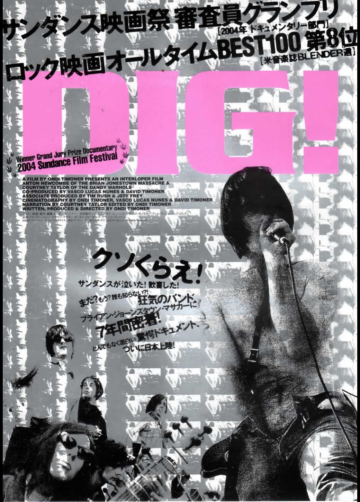
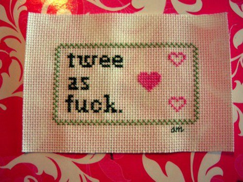
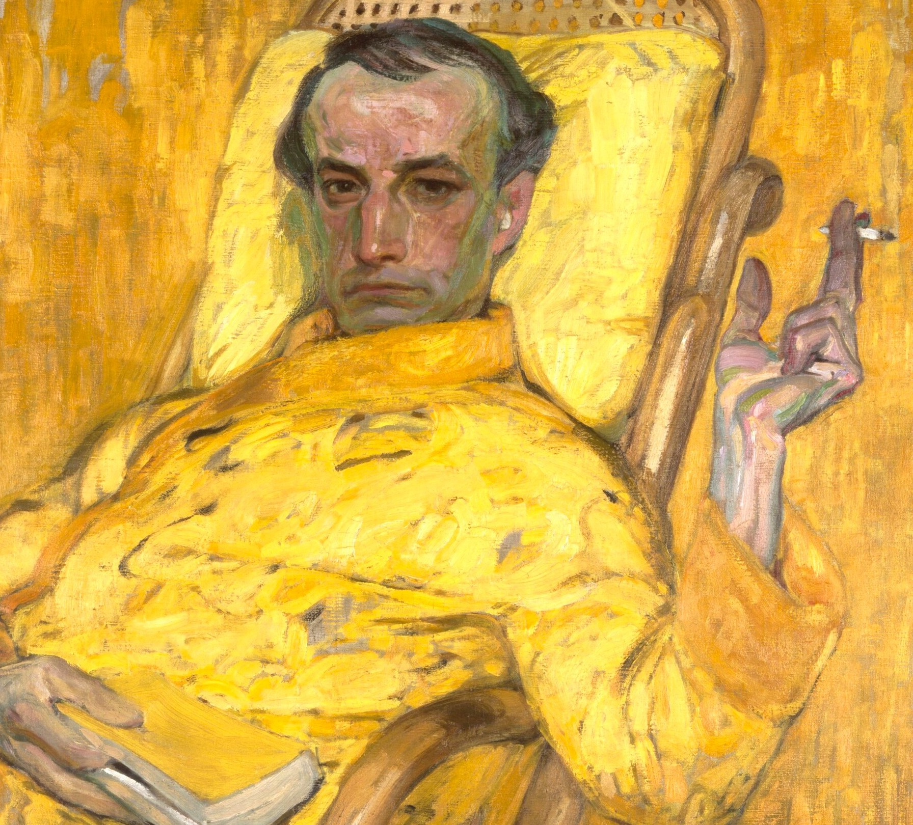
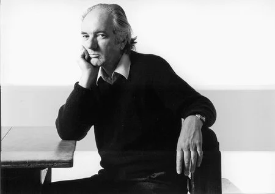
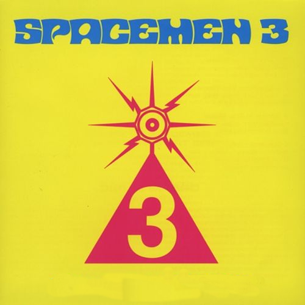
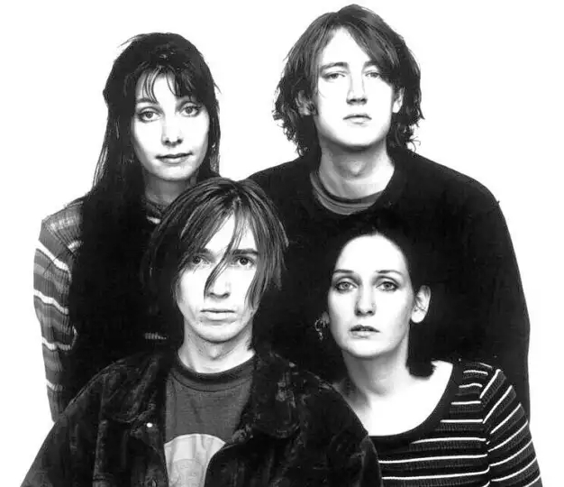

dig! (2004)
welcome to our screening of the classic documentary dig! by ondi timoner. shot over seven years,
it is a one-of-a-kind time capsule of the story of two bands and their love-hate relationship...
dig! (2004)
25th november, 2022
movie screening
welcome to our screening of the classic documentary dig! by ondi timoner. shot over seven years,
it is a one-of-a-kind time capsule of the story of two bands and their love-hate relationship...

twee pop night!
fancy pancy is back with a twee pop night with the best of twee pop music from the 80s and 90s.
come and join us for a night of twee pop music and dancing... 100fpd at the door! cash is king.
twee pop night!
26th november, 2022
club night
fancy pancy is back with a twee pop night with the best of twee pop music from the 80s and 90s.
come and join us for a night of twee pop music and dancing... 100fpd at the door! cash is king.

against the grain w. guests
against the grain is a new event series where we will explore the decadent literature of the
19th century. the first event will be a talk about joris-karl huysmans....
against the grain w. guests
28th november, 2022
other
against the grain is a new event series where we will explore the decadent literature of the
19th century. the first event will be a talk about joris-karl huysmans....

thomas bernhard talk w. guests
welcome to the talk about thomas bernhard, the new translation of previously unpublished works
and the new book of essays by dr. leonid szeryng. the event will take place on 2nd december 2022
at our bookshop on oak street 22, 1010 vienna...
thomas bernhard talk w. guests
2nd december, 2022
talk
welcome to the talk about thomas bernhard, the new translation of previously unpublished works
and the new book of essays by dr. leonid szeryng. the event will take place on 2nd december 2022
at our bookshop on oak street 22, 1010 vienna...

an evening of contemporary sitar music
an evening of contemporary sitar music with spacemen 3, but without sitars. the event will take place on 5th december 2022 at our bookshop on oak street 22, 1010 vienna. cashapp 100fpd or cash at the door. cash is king...
an evening of contemporary sitar music
5th december, 2022
concert
an evening of contemporary sitar music with spacemen 3, but without sitars. the event will take place on 5th december 2022 at our bookshop on oak street 22, 1010 vienna. cashapp 100fpd or cash at the door. cash is king...

an evening with my bloody valentine
my bloody valentine will give a rare live performance on our stage for the fi. the event will take place on 24th december 2022 at our bookshop on oak street 22, 1010 vienna. cashapp 100fpd or cash at the door. cash is king...
an evening with my bloody valentine
24th december, 2022
concert
my bloody valentine will give a rare live performance on our stage for the fi. the event will take place on 24th december 2022 at our bookshop on oak street 22, 1010 vienna. cashapp 100fpd or cash at the door. cash is king...